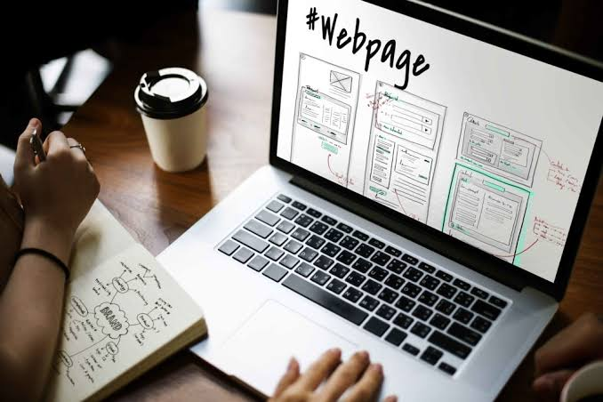

Las páginas web son documentos digitales que se encuentran en internet
y permiten compartir información, imágenes, videos y diferentes contenidos.
Se pueden visitar desde dispositivos como celulares, computadoras y tabletas mediante un navegador.
Una página web es un espacio digital creado para mostrar información o brindar servicios a los usuarios.
Puede utilizarse para estudiar, trabajar, comprar productos, comunicarse o entretenerse.
La programación web es el proceso de crear sitios y aplicaciones
que funcionan dentro de un navegador de internet (como Chrome, Safari o Edge).
Consiste en escribir código y usar instrucciones lógicas para que una página no solo sea visual,
sino también interactiva y conectada a bases de datos.
Se divide fundamentalmente en dos áreas:
• Frontend (Lado del cliente): Es todo lo que el usuario ve y con lo que interactúa en la pantalla
(textos, botones, imágenes y menús).
• HTML: Da la estructura básica del contenido.
• CSS: Define el diseño visual, los colores, las fuentes y los estilos.
• JavaScript: Agrega la interactividad (animaciones, formularios dinámicos, botones que reaccionan).
• Backend (Lado del servidor): Es la parte oculta que procesa la información,
gestiona la seguridad y se conecta con las bases de datos.
• Lenguajes: PHP, Python, Java, C#, Ruby o Node.js (JavaScript en el servidor).
• Bases de datos: MySQL, MongoDB o PostgreSQL para guardar usuarios, productos o mensajes.

• Página web: Es un único documento o vista en internet con una dirección (URL) propia.
• Sitio web: Es un conjunto de varias páginas web agrupadas bajo un mismo dominio
(por ejemplo, la página de inicio, de contacto y de servicios de una empresa).
• Aplicación web: Es un sitio mucho más complejo que permite realizar tareas específicas e iniciar sesión, como una red social,
un sistema de streaming o una tienda en línea (por ejemplo, Netflix o Gmail).
1. Tiendas en línea (E-commerce)
• Amazon: El gigante mundial de venta de productos físicos de todas las categorías.
• Liverpool: Ejemplo clásico de una tienda departamental física que opera con un fuerte catálogo digital en México.
2. Sitios corporativos e institucionales
• Tesla: Una página pensada para presentar la visión de la marca, mostrar especificaciones de
sus vehículos e invitar a la compra o reserva.
• Universidad Nacional Autónoma de México (UNAM): Portal institucional para
estudiantes, profesores y público general con trámites, noticias y oferta académica.
3. Blogs, revistas y medios digitales
• The New York Times: Portal global de periodismo que actualiza noticias, opinión y reportajes a diario.
• Xataka: Blog y revista especializada en tecnología, gadgets y ciencia en español.
4. Portafolios y sitios personales
• Behance: Plataforma donde diseñadores, fotógrafos e ilustradores crean su propio portafolio
digital para mostrar su estilo y conseguir clientes.
5. Redes sociales y comunidades
• LinkedIn: Red social enfocada en el ámbito profesional, hacer contactos laborales y publicar empleos.
• Discord: Web/aplicación orientada a la creación de comunidades de chat de voz, texto y video por intereses.
6. Herramientas y productividad en la nube (SaaS)
• Notion: Página web que funciona como un espacio de trabajo todo en uno para tomar notas, organizar proyectos y bases de datos.
• Figma: Editor de diseño y prototipado de interfaces que funciona directamente desde el navegador web.
• Sitios estáticos: Muestran la misma información a todos los visitantes; no se conectan a bases de datos
y suelen usarse para páginas de presentación rápida o currículums.
• Sitios dinámicos: Cambian su contenido según quién los visite, la hora o una base de datos en tiempo real
(por ejemplo, redes sociales, tiendas con stock variable o portales bancarios).
• Aplicaciones de una sola página (SPA): Se cargan una sola vez en el navegador y actualizan el contenido de forma fluida
sin recargar toda la pestaña (por ejemplo, herramientas de diseño como Canva).
| volver a inicio | anterior | siguiente |